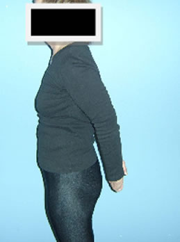
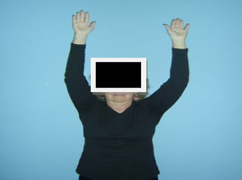
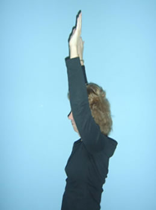

Module: Exercise
Jane Brandenstein, PT, and Janet Poole, PhD, OTR/L
Resources
Exercise log
Use this printout to identify an activity, and track goals and frequencies.
Printout PDFExercises for the shoulders
Pain and weakness can limit motion, so you need to do these exercises to make sure you do not lose motion. Also, the muscles in front of the shoulder (pectoralis muscles) can get tight from sitting too long with the shoulders hunched or slumped forward. These exercises can stretch those muscles.
Put your arms behind your back and try to grab your fingers/hands or wrist and try to put your arms away from your body, bringing your shoulder blades together as you do this.
Place your hands behind your head (interlace your fingers if you can). Keep your elbows up high and straight out to the side. Try to pull your shoulder blades together.
Raise your arms up over your head as far as you can. You can also try this lying down on your back in bed.
